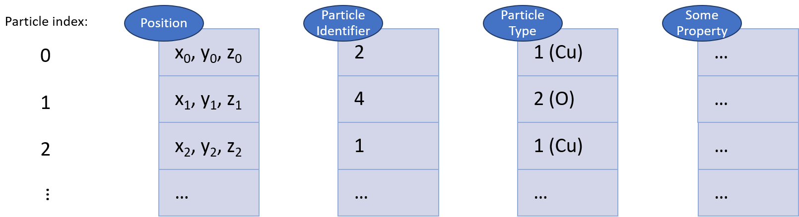

Particles
A system of N particles is represented in OVITO as a group of particle properties, each being a uniform data array of length N:
{kind=link}
The property array with the name Position is always part of the particle dataset and contains the Cartesian coordinates of the particles.
All other properties are optional. Whether they are present or not depends on the kind of simulation file you import
and the modifiers you apply to the dataset within OVITO. That’s because modifiers may add
new particle properties to the set, e.g., to store the results of a computation they perform.
You can open the data inspector panel of OVITO to view all particle properties that currently exist in the output of the data pipeline.
Special particle properties
Certain particle properties play a special role in OVITO, because their values control the visual appearance of the particles as well as other aspects. The following table lists these properties and describes their respective functions:
Particle property |
Data type (components) |
Description |
|---|---|---|
|
Real (X, Y, Z) |
The particle coordinates. For 2-dim. systems, the Z-component will be 0. |
|
Real (R, G, B) |
If present, this property controls the display color of particles. Red, green and blue components are in the range [0,1]. |
|
Real |
If present, this property controls the display size of particles. |
|
Integer |
Stores the type identifier of each particle. This also determines the
display size and color if the |
|
Integer |
Stores the unique ID of each particle. This information will be used by some modifiers to track particles over time even if the storage order changes. |
|
Real |
A value in the range [0,1] controlling the particle’s transparency. If not present, particles are rendered fully opaque. |
|
Integer |
Stores the current selection state of particles (1 for selected particles; 0 otherwise). |
Typed properties
{kind=link}
A typed property is a particle property array containing discrete numeric
values that represent type identifiers and an associated mapping of these numeric identifiers to corresponding type definitions.
The Particle Type property is a typical example for such a typed property:
It contains each particle’s chemical type encoded as a unique integer value (1, 2, 3, …).
Additionally, the Particle Type property is associated with a list of descriptors defining the attributes of each unique particle type.
This list of descriptors establishes a mapping between the numeric type IDs and each type’s attributes, such as name, display color,
and display radius.
{kind=link}
Note that a particle structure may not just contain a single typed property such as the Particle Type property.
In fact, several typed properties can co-exist simultaneously, establishing several orthogonal classifications.
Examples are the particle properties Residue Type, Structure Type, and Molecule Type.
All typed properties read from an imported simulation file are accessible in the pipeline editor
as shown in the screenshot on the right. Here you can edit each type’s attributes. In case of the Particle Type
property, these settings also affect how OVITO renders the particles of each type.
Particle types named after one of the standard chemical elements get automatically initialized with appropriate default values for the display color, display radius, van der Waals radius, and mass. If necessary, you can change the default values permanently for each type using the corresponding presets menus (see screenshot) or in the application settings. You can also predefine default attributes for types with user-defined names or for purely numeric particle types such as “Type 1”, “Type 2”, etc., which may be necessary when loading simulation files containing just numeric types without names (e.g. LAMMPS dump files).
See also
ovito.data.Particles(Python API)ovito.data.Property(Python API)ovito.data.Property.types(Python API)